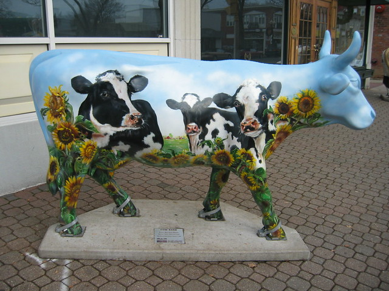
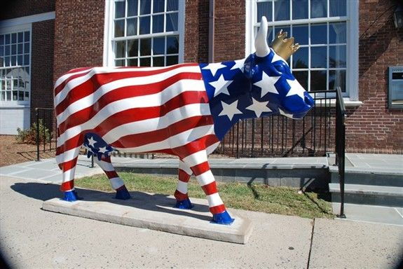
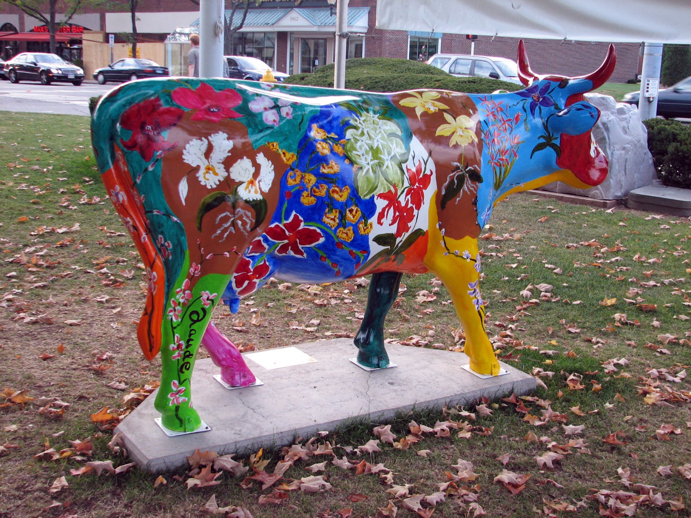

The Cows
All around West Hartford, you will find painted cow statues, some in schools, some near stores, some just out in the open They are a fun little easter egg that West Hartford residents absolutely love. They are from a company called CowParade, which has the cows in over 80 cities. They are painted by local artists in the community.
Gallery of Cows:


